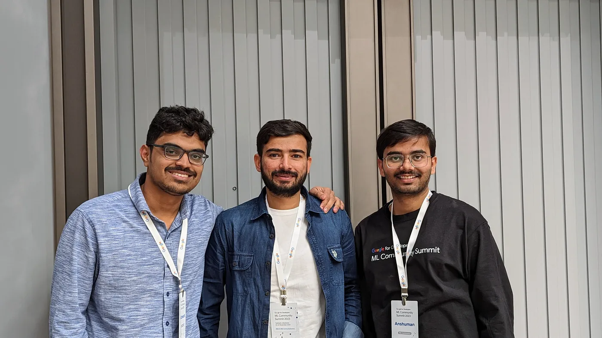

The AI world is brimming with talent. Folks in the AI industry and the research world are continuously pushing the boundaries of innovation. With this interview series, we want to focus on bringing these inspiring (and possibly unheard-of) stories out into the world — their struggles, their triumphs, and their journey. We will be conversing with people we have looked up to and still look up to for their unparalleled contributions to the AI world. We call this interview series AI Chronicles.
The two of us with Aakash in Uzbekistan! Aakash Kumar Nain — open source legend, MLE extraordinaire, Delhi lover, mountain climber. We had the privilege of meeting Aakash in Tashkent at the Google ML Community Summit and were taken aback by how laidback and easygoing he was. Looking at how meticulous he is with his work, we were expecting him to be the “serious kind”. The three of us instantly hit it off.
When we say Aakash is an open source legend, we kid you not. Aakash started contributing to DL open source in 2016, and has never looked back since then. He is a TensorFlow-Addons maintainer. He is a core contributor to Keras 3.0, the new multi-backend Keras. Our favourite open source work of his is, however, Annotated Papers, where he breaks down ML/DL papers into simple explanations. Aakash is a huge proponent of JAX. Safe to say, he has inspired folks like us to take to open source.
On top of his impressive open source work, he has 7 years of experience in the industry as an ML Engineer/Researcher, starting his career at Parallel Dots and then working at Ola, H2O.ai and now Merlyn Minds where he is working on building an AI assistant for education. Despite having spent 7 years in the industry, he has lost none of his inquisitiveness and curiosity.
We can keep raving on and on about Aakash’s technical accomplishments, but to us, what separates Aakash from the rest is his approach to life. Read on to find out more about the man!
Hi, Aakash! Thank you for doing this.
Thank you for having me here today.
Q: Could you discuss any machine learning projects or applications that you’ve found personally rewarding, either in terms of impact or the technical challenges involved?
Though all the open-source projects I worked on were rewarding, contributing to TensorFlow-Addons, Keras, JAX, and Keras Core created the biggest impact. Although I have been a TF user since 2016, my open-source journey started with TF-addons in 2019. Once you start exploring the low-level bits of a library or a framework, your understanding of the mental model improves automatically. I wrote many code examples for keras.io where I showcased the flexibility of the Keras API to build very complex models. The motivation for writing those code examples was to help people understand the mental model behind tf.keras
I consider myself a power Keras user. I have always wanted to contribute to the core Keras engine. This year, I finally got an opportunity to collaborate with Francois Chollet and the team to rewrite the entire Keras codebase with multi-backend support, including but not limited to TensorFlow, JAX, and PyTorch. It is one of my biggest open-source collaborations with the highest impact.
Q: The field of machine learning is continually evolving. Are there any emerging trends or developments that particularly excite you or that you believe will have a significant impact in the near future?
Diffusion models are one of the things that have gotten me excited about the future of generative AI after a long time. Though generative machine learning algorithms are nothing new, it’s just that the underlying algorithm for Diffusion models feels more natural. The other thing that I am looking forward to is the successor of the Transformer architecture. CNNs to transformers was a big leap. I hope the next set of algorithms is equally revolutionary.
Q: How do you approach maintaining a balance between your athletic interests, such as being a footballer, and your demanding career in data science? Do you find any synergies between these seemingly different pursuits?
Ever heard of the phrase “Too much of anything is good for nothing”? If you like/love doing something, that doesn’t mean you should devote your entire time to it. Of course, it’s a biased opinion, but to me, there is way more to life than just work. So, I distribute my time among all the things I enjoy doing. It doesn’t mean that it should be like that for anyone else in any sense. It’s a personal choice how much time one wants to dedicate to different aspects of life. Also, I am a firm believer that health is the true wealth. To ensure that I am physically fit, I go to the gym and play football regularly.
Q: Many aspiring data scientists grapple with imposter syndrome. Have you ever experienced such feelings, and if so, how did you overcome them?
Oh absolutely! Though many people may suffer from imposter syndrome at different stages, I think it’s way more common during the early years. When working in a fast-moving field like ML, it is natural to feel lagging, seeing the incredible progress in ML and AI daily. The best way to overcome such feelings is to understand that you don’t have to follow every other trend. Fundamentals matter the most in the long run. If you have a solid understanding of the fundamentals, things will always be easy.
Q: As a maintainer of TensorFlow addons and contributor to multi-backend Keras, can you give us some insights into the open-source development process, including the joys and challenges of contributing to these projects?
Contributing to open-source is a commitment. It’s not a one-time thing. If you are working on an open-source project, ideally you expect that the community will use it, and that too for a long period. Developing something that people are eager to use needs well-defined goals. The development of the project has to align with these goals.
The best part of OSS is that you get to collaborate with many talented people. Once you start developing things in collaboration, you get more clarity about the modalities (using the word modality loosely in this context). You start to optimize for maximum coverage-minimal maintenance. Talking about the challenges, I think the biggest challenge is commitment. Many people do OSS just to make it a bullet point in their resume, but some of us do it because we enjoy solving complex problems for a larger audience. If you have a full-time job, then working on OSS means cutting down on other things to find time for the project.
Q: How do you stay updated with the latest developments in the field of machine learning? Are there specific resources or communities you recommend for those looking to stay informed?
Reading research papers is the easiest way. The problem, nowadays, is that it is very hard to filter out good papers from the “pile” of research papers being dumped on arXiv every day. Earlier I used to use arXiv-sanity for filtering paper, but recent changes made to it made it somewhat less usable for me (asking Karpathy to bring back the top-rated filter). Now I rely mainly on my Twitter feed for filtering papers. It’s not that good, but it works.
To answer your question about communities and resources, I think Twitter and Kaggle are hands down the best. If you constantly use the two, you pretty much are aware of the latest research trends and the things that work in practice.
Q: If you had to offer a single piece of advice to aspiring data scientists or machine learning enthusiasts, what would it be, and why do you consider it so valuable?
As I said earlier, the most important thing is to learn the fundamental concepts. The biggest mistake I see people making, especially people starting their careers or those in the early stage, is that they get influenced(pun intended!) by the noise on social media. Also, learning “how” to use an algorithm and learning “when” to use an algorithm are two very different things.
One other unusual thing that I want to emphasize is that if you can afford higher education, go for it without a doubt. Degrees may not matter for your work, but they definitely help in your job search. I am not saying that you can’t do good without degrees, but you will get more opportunities easily if you have one. I couldn’t afford to apply for a master’s program after graduation, but if you can, you definitely should.
Q: When you are given a problem statement, how do you devise AI solutions for it? What do you look for in a proposed solution?
The first thing I do before attempting anything else at all is to go through the data thoroughly. People naively jump on model building, but I tend to spend a lot of time with the data at hand. Once I understand the dataset, I look for a trivial solution that can be considered as a baseline. Defining metrics for a model and defining metrics that align with the business are two different aspects. We can’t ignore the latter. Putting models into production means adjusting to the constraints in the production environment. Blatantly scaling up/down doesn’t work for most of the scenarios.
Q: You’ve always been bullish on JAX, the framework. What is it about JAX that you like? Why would you use JAX over say, TensorFlow or PyTorch? When you look at an ML framework, what attributes are you looking for?
Almost everything. Reproducibility is a first-class citizen, and so is parallelism in JAX. Have you tried sharding in JAX? I don’t think any other framework (past and present included) had such a good API design for implementing parallelism.
I would use JAX over any other framework because it is efficient and much easier to optimize. People keep focusing on compilers for programming languages but don’t focus enough on the need for a compiler for deep learning workflows. In my opinion, Python is the perfect language, XLA is a great compiler, and JAX is the best framework for deep learning.
If I were to choose a framework today from a given list, here are the following things that I use as a checklist for evaluation:
Mental model
Ease of reproducibility
Ease of parallelism
The balance between low-level and high-level
The ecosystem
I think the ecosystem is the part where JAX is lacking in a big way, but I hope with Keras 3, more people will contribute to the ecosystem, and it will catch up.
Q: Can’t have an interview without asking this question to the Annotated Papers guy 😂: what is one research paper you’ve read recently which gave you that “aha” feeling? Basically, a paper which blew your mind!
I wouldn’t say that I came across any paper in the last few months that blew my mind, but the latest paper from Apple titled MobileCLIP was a refreshing one. Deploying deep learning models on mobile devices is always a challenge, and requires a bit of rethinking, and modifications on the architectural side which aren’t that obvious when you are deploying things on a server. In that way, I think MobileCLIP is a must-read for anyone interested in those kinds of details.
Q: Your open source work has mostly focused on vision. Has your work in the industry focused around vision as well? Or have you dabbled in different fields?
Haha yes, my open-source work has mostly been focused on vision, but in terms of industrial experience, I have a T-shaped knowledge graph where I consider the depth of expertise in vision and width for other areas of Machine Learning. From 2017 to date, I have worked on business problems focused on traditional machine learning, time series, vision, speech, and NLP. I have been on the other side of ML as well, where I have focused on MLOPs along with my research work.
Computer Vision is my favorite field, and the biggest reason for that is that when I focus on vision problems, I have a sense of “what’s happening” inside my pipelines. I find vision more mature compared to other fields, and I absolutely love working with images.
Q: You’ve been in the industry for 6–7 years, and yet, manage to take time out to contribute to open source. What motivates you to keep contributing to open source?
Two major things. First, during my initial career phase, OSS played a big role in my learning and growth curves. Second, I consider solving problems in OSS as a mental exercise. The more you do it, the better you become. Your code being used by thousands of other developers is a true test of the logic baked in that code.
Q: What’s the next big thing for Aakash Nain? :) What are you planning to work on next in open source? If you have any big announcements to make, this is the best place to make them 😂
For now, I will be focusing on making some tutorials for large-scale training using Keras and JAX. At some point, I will also develop another library based on JAX purely for fun, mostly focused on the vision side, given if I get enough time.
Anshuman & Abheesht: Thank you, Aakash! It’s been great talking to you!
And that concludes the fourth interview of our “AI Chronicles” series! This series is a joint effort of Anshuman Mishra and Abheesht Sharma. Anshuman is currently working at Flip as a Machine Learning Engineer. Abheesht is an Applied Scientist at Amazon, where he works on detecting advertisement bots. Both of them contribute extensively to ML open-source software and have been involved in developing KerasNLP.